“Royal 3D Carousel ” Documentation by FWDesign - v1.0
“Royal 3D Carousel”
Thank you for purchasing our component. If you have any questions that are beyond the scope of this help file, please feel free to email via our email. Thanks so much!
Table of Contents
- Important notes read this before anything else.
- Setting up the thumbnails images/html contents.
- How to install the carousel with responsive / fixed width.
- How to install the carousel with fluid width.
- Constructor parameters.
- Adding categories.
- Adding thumbnails, html contents and media.
- Install in wordpress.
- Sources and Credits
Important notes make sure you read this! - top
Before reading forward you should understand how this carousel works. As you will read installing the carousel into your html page is straight forward and relative simple. The carousel is using <ul> and <li> html elements as the base for the skin and categories (the carousel supports one or more categories), this way if you like you can generate the content with php or asp from a database.
Each thumbnail has associated with it an action, when a thumbnail is pressed a new webpage can be opened or a lightbox with a video, image or iframe, the paths and other data for the image and video can be easely set. In case of the html content setup, the active html content from a thumbnail can be enabled to interact with any links, buttons etc that it contains.
Try to keep the thumbnails count under 50, this way the performance of the carousel will be great, if you add more it will get slower specially on mobile. The carousel also has a separate option for the mobile case, to limit the number of the thumbnails displayed, even though the pc version contains more than this max number, because the performance may vary greatly from the pc version, especially on older mobiles phones or tablets.
Because of the unsymmetrical thumbnails arrangement the carousel looks really good with landscape or square format thumbnails, if you need portrait thumbnails the carousel will still work but it might not look as you expect because the thumbnails will be close.
The examples which we have used in the demo page can be found in the demo folder. There is also a start folder which contains the minimal settings for the carousel for both the image and html contents version. Please use these files for referece to copy and paste the html and javascript code into your page.
The server is character case sensitive so always use lower case characters!
Setting up the thumbnails images/html contents. - top
Before you start using the carousel you need to set the thumbnailWidth and thumbnailHeight properties in the carousel constructor, this two properties represents the thumbnail width and height. Also the thumbnailBorderSize is subtracted from these values for the final size of the image, so your final image width for example will actually be thumbnailWidth - thumbnailBorderSize.
For example with for the 400 and 266 width and height values, and the border size 10, the width and height of the image will actually be 390 and 256, while the whole thumbnail is 400x266.
The 3D setup is configured such that the center thumbnail will have the actual size, and the ones from the left and right will be scaled down. This is also the same for the 2D setup.
If you find it difficult to understand this rules save your images at the same size as we did in our example.
How to install the carousel with responsive / fixed width. - top
Please note that in the html file which is used as reference we have used the "skin_modern_silver" skin, if you need another skin replace it by modifying the skin graphics path setting from the carousel constructor "skinPath". All skins are located in the load folder along with the images and css files.
- This display type allows the carousel to be embedded in your html page in a <div> element. This div element (the carousel's parent) can be located anywhere inside the page based on the page layout.
- Before you start there is a start_images_responsive_or_fixed.html file in the download files in the "start" folder for the images setup and start_html_content_responsive_or_fixed.html for the html content setup. This is a start template file which you can use to copy and paste the needed code this way you can make sure you are not making any mistake while setting up the carousel. Please note that these files contain only a few thumbnails entries, one for each lightbox media type and two cateogries for simplicity, this way it is easier to copy paste the code. If only one category is needed then delete the second <ul> tag with the attribute data-cat. Please open these html files with a text editor like notepad or preferably notepad++.
- Make sure that you copy and paste in the same folder with your html file the java and load folder.
- The javascript and css files must be imported, in the head section of your html file add the code from the below image.
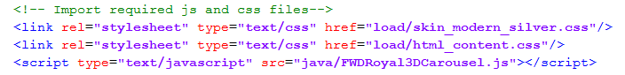
- Next step is to initialize the carousel with javascript, in the head section add code from the below image. Please note that all parameters are described in the constructor parameters section
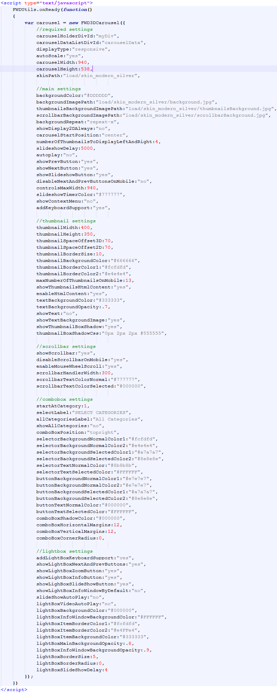
- You need a <div> element into which the carousel will be added as a child. This <div> element (the carousel's parent) can be located anywhere inside the page based on the page layout, so create a <div> and set an id for it, the id is important because it is passed in the carousel constructor, make sure it is unique. The div width and height and background color are set in the constructor, (example in the image below)
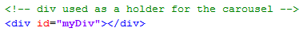
- There are three required and important parameters in the constructor (carouselWidth, carouselHeight, autoscale and skinPath), the width and height represents the maximum width and height of the parent <div> and carousel, so for example if you need the carousel at a width of 940px and height of 538px just set that in the constructor (example in the image below).
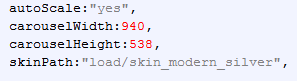
- The autoscale is useful only if the layout is responsive or fluidwidth, this means that if you have a responsive layout and the layout width is less then the carousel width specified in the constructor and you want to keep a correct ratio then set autoscale to yes otherwise set it to no, if autoscale is set to yes the parent <div> and carousel width and height will change based on the layout width this way a correct ratio is kept, if you don't want the height to change then set autoscale to no and only the carousel width will be modified.
- The skinPath is the path to the folder that contains all the skin graphics image files, for example "load/skin_modern_silver".
- Next step is to add the in the body element an <div> element which represents the carousel datalist, this <div> element must have an unique id which is passed in the constructor. Inside this <div> element the carousel categories are constructed. This is best illustrated in the below image. To add categories just copy and paste an <ul> element with an attribute data-cat (please note that in the below image the html code is minimized, to view the entire html code observe the start_images_responsive_or_fixed.html). Make sure you read the carousel datalist section to understand how to add more cateogries, thumbnails and configure the carousel datalist.
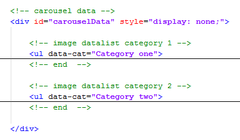
- These are all the steps needed to setup the carousel, again all this code is located in the "start" folder in the four html files so you can copy and paste the code easily without errors. Please make sure to read the constructor parameters section to understand all the carousel properties.
How to install the carousel with fluid width. - top
This display type allows the carousel to be embedded in your html page and it will always fill the browser width. This div element (the carousel's parent) can be located anywhere inside the page based on the page layout. Please follow the same rules as in the How to install the carousel with responsive / fixed width. The only difference is that in the constructor the display type parameter must be set to fluidwidth like this:displayType:"fluidwidth". Please note that there is a html file named start_images_fluid_width.html for the images setup or start_html_content_fluid_width.html for the html content setup as reference from which the html code can be copied and pasted into your own html page.
Constructor parameters. - top
These parameters represent the possible settings for the carousel, they are all visible in the below image and described below:
Required settings:
- carouselHolderDivId:"myDiv" - the div id into which the carousel will be added (this is also necessary if the displayType is set to fluidwidth).
- carouselDataListDivId:"carouselData" - the id of the <div> element used as the datalist and skin for the carousel.
- displayType:"responsive" - the display type, this can be responsive or fluidwidth, all display types are explained and an example is provided for each one of them.
- autoScale:"yes" - this can be "yes" or "no", this is useful only if the layout is responsive or fluidwidth, this means that if you have a responsive layout and the layout width is less then the carousel width specified in the constructor and you want to keep a correct ratio then set autoscale to yes otherwise set it to no, if autoscale is set to yes the parent <div> and carousel width and height will change based on the layout width this way a correct ratio is kept, if you don't want the height to change then set autoscale to "no" and only the carousel width will be modified.
- carouselWidth:940 - This represents the maximum carousel width.
- carouselHeight:538 - This represents the maximum carousel height.
- skinPath:"load/skin_modern_silver" - this is the path to the skin graphics folder of the carousel.
Main settings:
- backgroundColor:"#DDDDDD" - the carousel background color.
- backgroundImagePath:"load/graphics/skin1/background.jpg" - this image is used as background image for the entire carousel.
- thumbnailsBackgroundImagePath:"load/graphics/skin1/thumbnailsBackground.jpg" - this image is used as a background image only for the upper thumbnails of the carousel.
- scrollbarBackgroundImagePath:"load/graphics/skin1/scrollbarBackground.jpg" - this image is used as a background image only for the lower controls of the carousel.
- backgroundRepeat:"repeat-x" - this is used for the CSS background-repeat property of all of the three above background images, it can be any of the CSS values like "repeat-x", "repeat-y", "no-repeat" etc.
- showDisplay2DAlways:"no" - this can be "yes" or "no", you can set the carousel to always display the 2D configuration even on browsers that support 3D if you want to.
- carouselStartPosition:"center" - this is the start position of the thumbnails of the carousel, it can be "left", "right" or "center".
- numberOfThumbnailsToDisplayLeftAndRight:4 - this represents the maximum number of thumbnails to be displayed on the left and right of the center.
- slideshowDelay:5000 - this is the slideshow delay in miliseconds - this means 5000 represents 5 seconds.
- autoplay:"no" - this can be "yes" or "no", it can enable the carousel to start with the autoplay on or off.
- showPrevButton:"yes" - this can be "yes" or "no", it shows or hides the previous button of the carousel.
- showNextButton:"yes" - this can be "yes" or "no", it shows or hides the next button of the carousel.
- showSlideshowButton:"yes" - this can be "yes" or "no", it shows or hides the slideshow button of the carousel.
- disableNextAndPrevButtonsOnMobile:"" - this can be "yes" or "no", it shows or hides the next and prev buttons on the mobile devices, if you want them to be displayed only on the pc.
- controlsMaxWidth:940 - this represends the max widths of the controls and is used to scale the scrollbar at resize.
- slideshowTimerColor:"#777777" - this is the color of the slideshow timer display numbers.
- showContextMenu:"yes" - this can be "yes" or "no", it shows or hides the context menu (at right click) of the carousel.
- addKeyboardSupport:"yes" - this can be "yes" or "no", it adds keyboard navigation support for the carousel, through the left and right arrows.
Thumbnail settings:
- thumbnailWidth:420 - this is the width of the carousel thumbnails.
- thumbnailHeight:286 - this is the height of the carousel thumbnails.
- thumbnailSpaceOffset3D:-19 - this is an offset used for the space between the thumbnails on the 3D version of the carousel. It can have a positive value to wider their space, or even a negative value to bring them closer.
- thumbnailSpaceOffset2D:-19 - this is an offset used for the space between the thumbnails on the 2D version of the carousel. The same as the 3D version it can have a positive value to wider the space between them, or even a negative value to bring them closer.
- thumbnailBorderSize:10 - the thumbnail border size in pixels.
- thumbnailBackgroundColor:"#666666" - the background color of the thumbnails.
- thumbnailBorderColor1:"#fcfdfd" - the upper border color of the thumbnails border. If these two values are different, they create a gradient effect, if they are the same then there is a single color.
- thumbnailBorderColor2:"#e4e4e4" - the lower border color of the thumbnails border. If these two values are different, they create a gradient effect, if they are the same then there is a single color.
- maxNumberOfThumbnailsOnMobile:13 - this is the maximum number of thumbnails to be displayed only on the mobile devices for performance reasons.
- showThumbnailsHtmlContent:"no" - this can be "yes" or "no". If it is "yes" then the carousel will display images in the thumbnails, otherwise a html content will be displayed.
- enableHtmlContent:"no" - this can be "yes" or "no". If it is "yes" then the thumbnails html content will be active such that you can click on the links or buttons etc. Please note that this way the main click on the thumb to open the lightbox or a link will be disabled.
- textBackgroundColor:"#333333" - the background color of the thumbnails text.
- textBackgroundOpacity:.7 - the opacity of the text background.
- showText:"" - this can be "yes" or "no", used to show or hide the thumbnails hover text.
- showTextBackgroundImage:"yes" - this can be "yes" or "no", used to show or hide the thumbnails text background image. If it is "no" then the previous color setting will be used.
- showThumbnailBoxShadow::"yes" - this can be "yes" or "no", used to show an box shadow on the thumbnail if desired.
- thumbnailBoxShadowCss:"0px 2px 2px #555555" - this represents the CSS box-shadow property for the thumbnail.
Scrollbar settings:
- showScrollbar:"yes" - this can be "yes" or "no", used to show or hide the scrollbar.
- disableScrollbarOnMobile:"yes" - this can be "yes" or "no", used to disable the scrollbar only on mobile devices.
- enableMouseWheelScroll:"yes" - this can be "yes" or "no". Disables or enables the mouse wheel support for scrolling the carousel.
- scrollbarHandlerWidth:300 - the width of the scrollbar handler.
- scrollbarTextColorNormal:"#777777" - the normal color of the scrollbar text.
- scrollbarTextColorSelected:"#000000" - the selected color of the scrollbar text.
Combobox settings:
- startAtCategory:1 - If there is more then one category you can specify at which one to start, please note that the count starts from 1, if the "showAllCategories" setting is enabled it is considered the first category.
- selectLabel:"SELECT CATEGORIES" - The combobox default label.
- showAllCategories:"yes" - This can be "yes" or "no". If it is set to yes an extra combobox button will be added which will load all categories in a single category.
- comboBoxPosition:"topright" - This can be topleft or topright.
- selectorBackgroundNormalColor1:"#fcfdfd" - The combobox main button background upper normal color. If these two values are different, they create a gradient effect, if they are the same then there is a single color.
- selectorBackgroundNormalColor2:"#e4e4e4" - The combobox main button background lower normal color. If these two values are different, they create a gradient effect, if they are the same then there is a single color.
- selectorBackgroundSelectedColor1:"#a7a7a7" - The combobox main button background upper selected color. If these two values are different, they create a gradient effect, if they are the same then there is a single color.
- selectorBackgroundSelectedColor2:"#8e8e8e" - The combobox main button background lower selected color. If these two values are different, they create a gradient effect, if they are the same then there is a single color.
- selectorTextNormalColor:"#8b8b8b" - The combobox main button text normal color.
- selectorTextSelectedColor:"#FFFFFF" - The combobox main button text selected color.
- buttonBackgroundNormalColor1:"#e7e7e7" - The combobox buttons background upper normal color. If these two values are different, they create a gradient effect, if they are the same then there is a single color.
- buttonBackgroundNormalColor2:"#e7e7e7" - The combobox buttons background lower normal color. If these two values are different, they create a gradient effect, if they are the same then there is a single color.
- buttonBackgroundSelectedColor1:"#a7a7a7" - The combobox buttons background upper selected color. If these two values are different, they create a gradient effect, if they are the same then there is a single color.
- buttonBackgroundSelectedColor2:"#8e8e8e" - The combobox buttons background lower selected color. If these two values are different, they create a gradient effect, if they are the same then there is a single color.
- buttonTextNormalColor:"#000000" - The combobox buttons text normal color.
- buttonTextSelectedColor:"#FFFFFF" - The combobox buttons text selected color.
- comboBoxHorizontalMargins:12 - Horizontal margins/offset in pixels for the combobox.
- comboBoxVerticalMargins:12 - Vertical margins/offset in pixels for the combobox.
- comboBoxCornerRadius:0 - Corner radius in pixels for the combobox.
Lightbox settings:
- addLightBoxKeyboardSupport:"yes" - this can be "yes" or "no", adds keyboard support to the lightbox.
- showLightBoxNextAndPrevButtons:"yes" - this can be "yes" or "no", hides or shows the lightbox next and prev buttons.
- showLightBoxZoomButton:"yes" - this can be "yes" or "no", hides or shows the lightbox zoom button.
- showLightBoxInfoButton:"yes" - this can be "yes" or "no", hides or shows the lightbox info button and info window.
- showlightboxSlideShowButton:"yes" - this can be "yes" or "no", hides or shows the lightbox slideshow button.
- showLightBoxInfoWindowByDefault:"no" - this can be "yes" or "no", opens the info window by default.
- slideShowAutoPlay:"yes" - this can be "yes" or "no", slideshow autoplay feature.
- lightBoxVideoAutoPlay:"no" - this can be "yes" or "no", vimeo and youtube autoplay feature.
- lightboxBackgroundColor:"#000000" -the lightbox main background color.
- lightBoxInfoWindowBackgroundColor:"#FFFFFF" -the lightbox description window background color.
- lightBoxItemBorderColor1:"#FFFFFF" - the lightbox image or video upper border color. If these two values are different, they create a gradient effect, if they are the same then there is a single color.
- lightBoxItemBorderColor2:"#FFFFFF" - the lightbox image or video lower border color. If these two values are different, they create a gradient effect, if they are the same then there is a single color.
- lightBoxItemBackgroundColor:"#FFFFFF" - the lightbox image or video background color.
- lightBoxMainBackgroundOpacity:.8 - the lightbox main background opacity, a number from 0 to 1.
- lightBoxInfoWindowBackgroundOpacity:.9 - the lightbox description window background opacity, a number from 0 to 1.
- lightBoxBorderSize:5 - the lightbox image or video border size.
- lightBoxBorderRadius:0 - the lightbox border radius in pixels.
- lightBoxSlideShowDelay:4 - the lightbox slideshow delay in seconds.
Adding categories. - top
Adding categories is easy just copy and paste inside the datalist <ul> element another <ul> element with an attribute data-cat, this attribute is setting the button label. Inside the <ul> element with the attribute data-cat thumbnails with images or html content can be added (please read Adding thumbnails and media). To remove the category just delete the <ul> element with an attribute data-cat which you don't need. Please note that if the carousel has only one category the combobox will be disabled/not visible. This is better illustrated in the below image, please note that we minified the html code, to view it maximized open any of the html files from the "start" folder provided in the download files.
Adding thumbnails, html contents and media. - top
This section describes how to add a thumbnail and how to configure it so that it display videos, images, iframes, html contents or open links. Make sure you have opened any of the html files from the "start" folder provided, in a text editor for reference. First you need to know that each thumbnail is associated with an image, video, iframe, link or html content. Please note that the <li> with the attribute data-info which represents the lightbox description is optional, also the <li> with the attribute data-thumbnail-text which represents the thumbnail description is optional if the showText is set to "no". To add more thumbnails just copy paste a <li> element like in the examples below in the category of your choosing.
Adding images:
To add an image add the code from the below image into the datalist <ul> just like the image below.The first <li> element represents the image path, the second <li> element represents the thumbnails path, the third <li> element represents the thumbnail description and the forth <li> element represents the lightbox description. The three extra text settings are used separately for each thumb to set the thumbnail text description and title. The first one text-title-offset is used to show more or less of the text in case of a title on double lines for example, or it can even be 0 if you don't want the title to be displayed at all except on mouse hover. The next two settings text-offset-top and text-offset-bottom are used to position the text after it is fully displayed at mouse hover such that it can be centralised better.
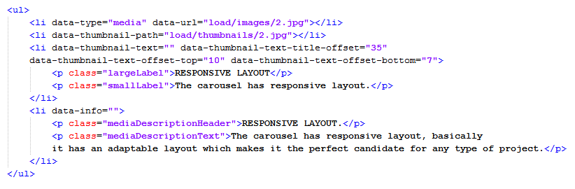
Adding videos from vimeo:
To add a video from vimeo add the code from the below image into the datalist <ul> just like the image below. The first <li> element represents the video data as you can see you can set the video width and height and also the url of the video which you want to display, the second <li> element represents the thumbnails path, the third <li> element represents the thumbnail description and the forth <li> element represents the lightbox description. The three extra text settings are used separately for each thumb to set the thumbnail text description and title. The first one text-title-offset is used to show more or less of the text in case of a title on double lines for example, or it can even be 0 if you don't want the title to be displayed at all except on mouse hover. The next two settings text-offset-top and text-offset-bottom are used to position the text after it is fully displayed at mouse hover such that it can be centralised better.
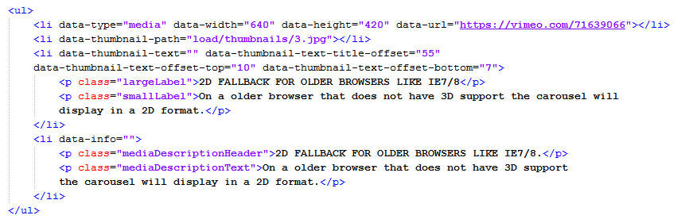
Adding videos from youtube:
To add a video from youtube add the code from the below image into the datalist <ul> just like the image below. The first <li> element represents the video data as you can see you can set the video width and height and also the url of the video from youtube which you want to display, the second <li> element represents the thumbnails path, the third <li> element represents the thumbnail description and the forth <li> element represents the lightbox description.The three extra text settings are used separately for each thumb to set the thumbnail text description and title. The first one text-title-offset is used to show more or less of the text in case of a title on double lines for example, or it can even be 0 if you don't want the title to be displayed at all except on mouse hover. The next two settings text-offset-top and text-offset-bottom are used to position the text after it is fully displayed at mouse hover such that it can be centralised better.
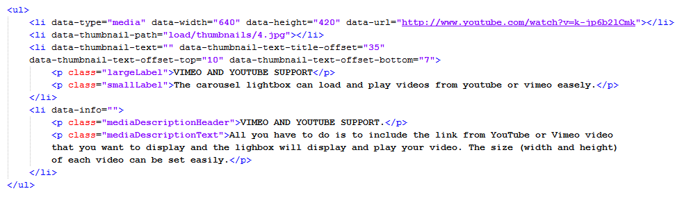
Adding an iframe (html page):
To add a html page (iframe) add the code from the below image into the datalist <ul> just like the image below. The first <li> element represents the iframe data as you can see you can set the iframe width and height and also the url of the html page which you want to display, the second <li> element represents the thumbnails path, the third <li> element represents the thumbnail description and the forth <li> element represents the lightbox description.The three extra text settings are used separately for each thumb to set the thumbnail text description and title. The first one text-title-offset is used to show more or less of the text in case of a title on double lines for example, or it can even be 0 if you don't want the title to be displayed at all except on mouse hover. The next two settings text-offset-top and text-offset-bottom are used to position the text after it is fully displayed at mouse hover such that it can be centralised better.
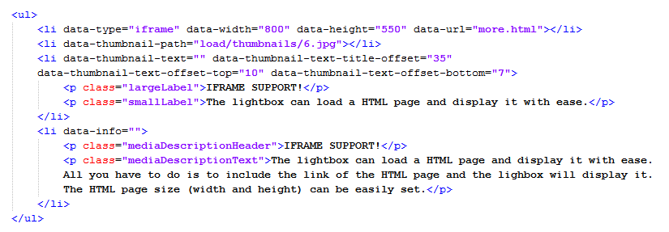
Adding a link to open when a thumbnail is pressed:
To add a link to a thumbnail add the code from the below image into the datalist <ul> just like the image below. The first <li> element represents the link data as you can see you can add the url to open when the thumbnail is pressed and the url target, the second <li> element represents the thumbnails path, the third <li> element represents the thumbnail description and the forth <li> element represents the lightbox description. The three extra text settings are used separately for each thumb to set the thumbnail text description and title. The first one text-title-offset is used to show more or less of the text in case of a title on double lines for example, or it can even be 0 if you don't want the title to be displayed at all except on mouse hover. The next two settings text-offset-top and text-offset-bottom are used to position the text after it is fully displayed at mouse hover such that it can be centralised better.
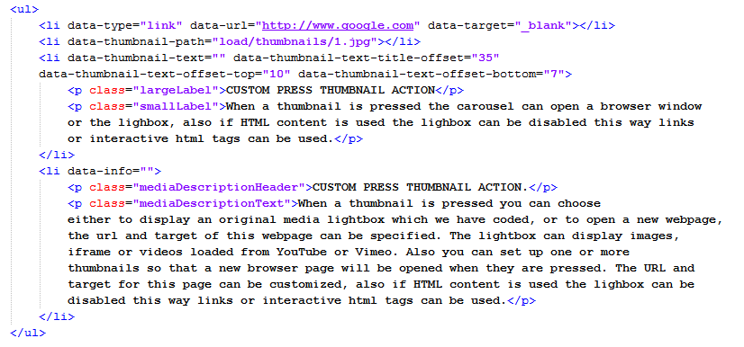
Adding a html content:
The only difference to the image thumbnail is that the second <li> element contains the html content directly, where the image had the thumbnail path. Instead the data-thumbnail-path setting, the one for html content will have a data-html-content setting, and the <li> itself will contain any html content you want, you can add divs, tables, links, texts, buttons etc all of them modifiable with CSS. The lightbox features for opening a link, or showing a video or iframe remain the same. The next example will be for a link.
To add a html content add the code from the below image into the datalist <ul> just like the image below. The first <li> element represents the link data as you can see you can add the url to open when the thumbnail is pressed and the url target, the second <li> element represents the div that contains any html content you want also with CSS, the third <li> element represents the thumbnail description and the forth <li> element represents the lightbox description.The three extra text settings are used separately for each thumb to set the thumbnail text description and title. The first one text-title-offset is used to show more or less of the text in case of a title on double lines for example, or it can even be 0 if you don't want the title to be displayed at all except on mouse hover. The next two settings text-offset-top and text-offset-bottom are used to position the text after it is fully displayed at mouse hover such that it can be centralised better.
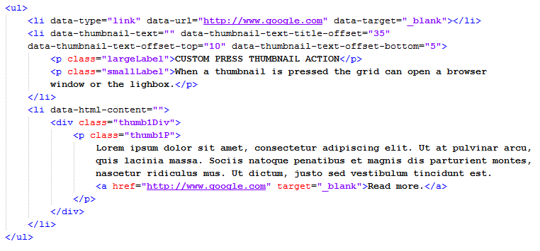
In the case that you set the enableHtmlContentsetting to "yes", then it will enable the thumbnails html content to be active such that you can click on the links or buttons etc. Please note that this way the main click on the thumb to open the lightbox or a link will be disabled. Also in this case you don't need the <li> elements for the lightbox or text, just like in the image below:
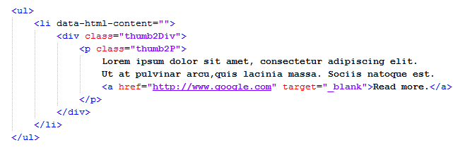
Install in wordpress: - top
We have tested the carousel on wordpress version 3.4, if you don't have the latest version then please install it, on an older version the embedding might not work.
Make sure you read the the other sections in the help file, it is important to familiarize your self with the carousel settings and what needs to be configured.
You need a ftp program to connect to your ftp server and upload the carousel files, I use filezila is a free ftp program.
Connect to your server and open the folder in which wordpress is located, in my case it is "wp", in that folder upload the load folder and the java folder, the load folder contains the images, skins and css files and the java folder contains the javascript file. If you want to add more images upload them into the load folder inside images and thumbnails folders, but also make sure to add and entry in the carousel datalist too (this is explained in Adding thumbnails and media).
To embed the carousel into wordpress first login as an administrator, from the menu open pages, add your page title and select the HTML tab not the VISUAL tab, after you do this copy and paste the text from the wordpress.txt file, replace http://www.webdesign-flash.ro/wp/ with your domain name and your wordpress folder label then save the changes. To add more thumbnails read the Adding thumbnails and media
You can add a .css file for the description window, please note that the wordpress has it's own set of css rules this is based on the theme, each theme is different, some times this css rules might have higher precedence over the one you declare so if this is the case you must use inline css for the description window or use the !important.
Sources and Credits: - top
This component was made by Mihai from FWD (FWDesign) FLASH WEB DESIGN, for more information and support contact us at contact@webdesign-flash.ro
Once again, thank you so much for purchasing this item. As I said at the beginning, I'd be glad to help you if you have any questions regarding this gallery and I'll do my best to assist.
FWDesign
Go To Table of Contents